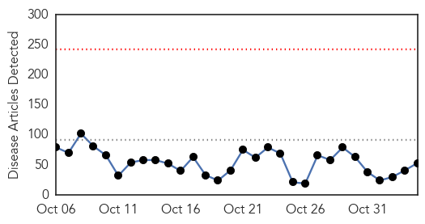
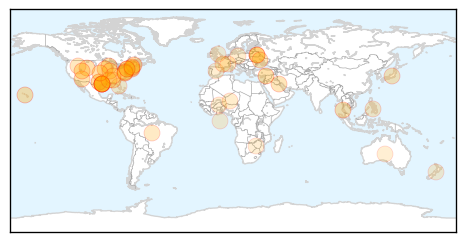
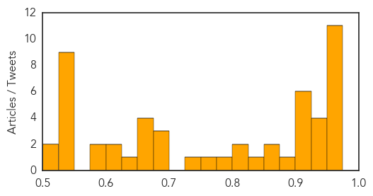
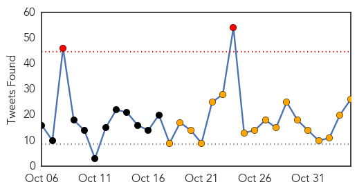
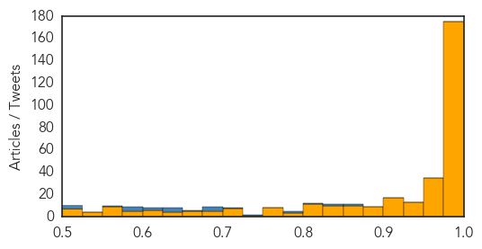

Unknown
30-Day Web Trend
0 alerts, 0 warnings

30-Day Twitter Trend
2 alerts, 0 warnings

Article Locations
Article Confidences
Top Articles:
- 0.955
- Researchers Tap Web Chatter To Figure Out Who's Sick
- 0.955
- Researchers Tap Web Chatter To Figure Out Who's Sick
- 0.955
- Researchers Tap Web Chatter To Figure Out Who's Sick
- 0.955
- Researchers Tap Web Chatter To Figure Out Who's Sick
- 0.955
- Researchers Tap Web Chatter To Figure Out Who's Sick
- 0.955
- Researchers Tap Web Chatter To Figure Out Who's Sick
- 0.955
- Researchers Tap Web Chatter To Figure Out Who's Sick
- 0.955
- Researchers Tap Web Chatter To Figure Out Who's Sick
- 0.955
- Researchers Tap Web Chatter To Figure Out Who's Sick
- 0.955
- Researchers Tap Web Chatter To Figure Out Who's Sick
- 0.955
- Researchers Tap Web Chatter To Figure Out Who's Sick
- 0.946
- Undiagnosed, undertreated Chagas disease emerging as US public health threat
- 0.942
- Kissing Bug that Feeds on People's Faces at Night 'Emerging Health Threat' in US
- 0.940
- 'Kissing Bug' Now Spreading Tropical Disease in U.S.
- 0.939
- 'Kissing Bug' Now Spreading Tropical Disease in U.S.
- 0.920
- Belarusian labs capable of detecting ASF virus genome
- 0.917
- Chicago Tribune
- 0.917
- Chicago Tribune
- 0.917
- Chicago Tribune
- 0.912
- Belarus Suspends Pork Exports to Russia
- 0.910
- The world windows to Thailand
- 0.880
- Chagas Disease Parasite Found in Texas
- 0.866
- Russian troops moving towards Ukraine border -NATO's Stoltenberg
- 0.859
- Experts warn of cases of Chagas disease in U.S.
- 0.850
- Google Updating Flu Tracker To Include CDC Data, New Search Terms
- 0.824
- Food poisoning cases on the rise - Kuwait Times
- 0.804
- Taiwan reports 17th human case of Japanese encephalitis this year
- 0.778
- Parent's Guide to the Flu
- 0.750
- Bonneville County horses euthanized for highly contagious virus
- 0.729
- Beware Of The 'Kissing Bug'! Doctors Fear Triatomine Bugs Have Entered U.S.
- 0.694
- The Real Story of China's Jiang Zemin – Chapter 20 (Page 1)
- 0.679
- Artesunate-Mefloquine Fixed-Dose Combination (ASMQ FDC) Proves Safe and Efficacious to Treat Children in Africa with Malaria
- 0.677
- Essential services hit hard
- 0.673
- International baby trial hopes to find Achilles' heel in HIV
- 0.662
- Confederate flag in Paris police precinct draws scorn
- 0.660
- DOH steps up fight vs malaria, filariasis in CV
- 0.658
- Mexico detains fugitive mayor and wife over missing students
- 0.641
- Florida woman says her daughter is paralyzed because of flu shot
- 0.624
- Forensic DNA test conclusively links snake bite marks on people to species
- 0.623
- Consider Pursuing a Medical Career as a Geriatric Specialist
- 0.599
- Artesunate-Mefloquine Fixed-Dose Combination (ASMQ FDC) Proves Safe and Efficacious to Treat Children in Africa with Malaria
- 0.581
- DNA Test Identifies Snake Bites
- 0.545
- Republicans win control of US Senate in blow to Obama
- 0.545
- An idiot’s guide to the US midterms
- 0.545
- Spain seeks to block Catalan independence vote
- 0.545
- Republicans look to take Senate in US midterm elections
- 0.545
- In pictures: Life goes on amid the rubble in Aleppo
- 0.545
- France urges US coalition support for Syrian rebels in Aleppo
- 0.545
- Burkina's interim military leader wants transition 'within two weeks'
- 0.542
- Nurses support “Let’s PLAN for better care” initiative
Showing top 50 articles...
Top Tweets:
- 0.786
- Fight the flu! Protect yourself & others. Get a flu vaccine every season. http://t.co/NRqMeJDwjz
- 0.609
- Y en español, siga para el Dia de Malaria en las Americas este jueves, 6 de noviembre MalariaDayAmericas http://t.co/ijqFmHJwFN
Ebola
30-Day Web Trend
16 alerts, 8 warnings

30-Day Twitter Trend
2 alerts, 17 warnings

Article Locations

Article Confidences
Top Articles:
- 1.000
- Disease claims another doctor
- 1.000
- WHO boss blames drug industry's profit drive for Ebola cure delay
- 1.000
- Questions Remain About Ebola
- 1.000
- Ebola: Fears amid Hope (1), Articles
- 1.000
- Latest Ebola News: China to quarantine Ebola doctors coming from West Africa
- 1.000
- Ebola in India: 8 Facts about Ebola you must know
- 1.000
- Thousands in Sierra Leone break Ebola quarantine to find food
- 1.000
- Ebola claims fifth Sierra Leone doctor - Africa
- 1.000
- Ebola in Africa: This is how much of the continent is really affected
- 1.000
- Latest Updates Thousands Break Ebola Quarantine to Find Food in Sierra Leone
- 1.000
- Ebola kills 5th doctor in Sierra Leone News -- GOPUSA
- 1.000
- Ebola’s orphans: Survivors care for children left behind by disease
- 1.000
- What You Should Know About Ebola
- 1.000
- Two local patients found Ebola-free after isolation
- 1.000
- Ebola in Dallas: Stories, videos, photos, graphics and resources from The Dallas Morning News
- 1.000
- Untitled Article
- 1.000
- S'pore imposes visa requirements on citizens from 3 Ebola-affected countries (Amended), Government & Economy
- 1.000
- Panel Debates Lessons from Ebola
- 1.000
- Ebola cure delayed by drug industry’s drive for profit, WHO leader says
- 1.000
- US nurse, Maine settle Ebola quarantine suit
- 1.000
- Visitors to Vietnam from Ebola-hit areas to be twice checked
- 1.000
- US Scientists: Questions Remain About Ebola
- 1.000
- Ebola false alarms in London, Vietnam
- 1.000
- News Guide: A look at latest Ebola developments
- 1.000
- Can You Really get Ebola From Your Dog? (Op-Ed)
- 1.000
- Sudan Vision Daily
- 1.000
- Rise in number of Ebola orphans
- 1.000
- Worst Ebola outbreak on record tests global response
- 1.000
- China.org.cn China, Breaking News, News
- 1.000
- As Ebola declines in Liberia, health officials scale back response plans
- 1.000
- CHRONOLOGY-Worst Ebola outbreak on record tests global response
- 0.999
- Ebola, from Trenton to Canada, Atlanta to Sierra Leone
- 0.999
- Despite errors, Ebola fails to spread here
- 0.999
- Ebola Impedes Access to General Health Care
- 0.999
- Govts going about Ebola control the wrong way
- 0.999
- Ebola: Abbott government relents, will send Australian volunteers to treat victims
- 0.999
- UNICEF to boost staff in Ebola-hit countries; UN health chief deplores lagging vaccine research
- 0.999
- Protecting your workforce: what you need to know about Ebola
- 0.999
- Nurse, Maine settle Ebola quarantine suit
- 0.999
- New Ebola Outbreak Raises Fears In Sierra Leone
- 0.999
- Researcher lectures on history, consequences, treatment of Ebola
- 0.999
- WHO asks Canada to justify Ebola-related travel restrictions
- 0.999
- Abbott government relents, will send Australian volunteers to treat victims
- 0.999
- Ebola Trend Uneven as UN Worries ‘Like Mad’ About Rebound
- 0.999
- Australia to contract private medical firm to fight Ebola
- 0.999
- UNICEF to boost staff in Ebola-hit countries; UN health chief deplores lagging vaccine research
- 0.999
- Thousands break Ebola quarantine to find food
- 0.999
- WHO Pillories Drug Industry on Failure to Develop Vaccine
- 0.999
- Thousands break Ebola quarantine to find food
- 0.999
- Michael Gerson: Still in denial on Ebola
Showing top 50 articles...
Top Tweets:
- 0.973
- There is no Ebola vaccine 'because the virus previously only affected poor African nations', WHO chief says http://t.co/vVksCShIXL
- 0.964
- RT: Sierra Leone - Thousands break Ebola quarantine to find food http://t.co/xJyJcSt4Ir h/t casey Ebola
- 0.955
- As Ebola declines in Liberia, health officials reassess response plans. http://t.co/gDSJM6ezLi
- 0.954
- Fifth Sierra Leone doctor dies from Ebola; apparent case drop in Liberia; today's Ebola news summary http://t.co/AGpHBvXuHN
- 0.933
- RT: Efforts to tackle Ebola in Senegal - now Ebola free - incl not only rapid infectious disease control, but also SMS http://t.co/VL…
- 0.933
- RT: Efforts to tackle Ebola in Senegal - now Ebola free - incl not only rapid infectious disease control, but also SMS http://t.co/VL…
- 0.932
- Prix Riz, huile et pommes de terre a double au Liberia, selon UNMEER, et hausse prix Riz 30% au Sierra Leone. Pas de timeline, cause Ebola.
- 0.928
- On the frontline in Sierra Leone as Ebola virus spreads. http://t.co/wFRN7zBKix
- 0.928
- On the frontline in Sierra Leone as Ebola virus spreads EbolaResponse @BBCWorld http://t.co/Ig3x2vyJQ9
- 0.904
- Peter Salama, Global Ebola Emergency Coordinator on’s response to Ebola ebolaresponse http://t.co/YS1m6azHPu
- 0.898
- Fresh Ebola outbreak in Sierra Leone raises fears of new infection chain. http://t.co/C7BYave2PO
- 0.898
- Fresh Ebola outbreak in Sierra Leone raises fears of new infection chain http://t.co/0JHqtnfDYe
- 0.884
- Even after surviving Ebola, some face 'Post Ebola Syndrome' w/numerous health problems, reports: http://t.co/CUPSuKPopB
- 0.877
- Public Health in the Age of Ebola in West Africa ebolaresponse http://t.co/St5jNBam98
- 0.872
- So Much for Ebola: U.S. Loses Interest in Virus as Cases Dwindle. http://t.co/V3vkBwL7zc
- 0.869
- Proud of work of CDC experts working 24/7 in response to Ebola outbreak in West Africa. Read their stories here: http://t.co/8oQQvtOvH1
- 0.869
- New Ebola outbreak in Sierra Leone raises fears of new infection chain. http://t.co/34lT71FY7z
- 0.858
- In Ebola affected region of West Africa, persistent malaria epidemic is adding to more deaths https://t.co/dmtbZbc42C globalhealth
- 0.854
- BBC News - On the frontline in Sierra Leone as Ebola virus spreads http://t.co/ByqI3a8WQI
- 0.852
- Ebola: leçons apprises du point de vue d'un anthropologue http://t.co/xF3ZuqvcI2
- 0.838
- Identify, Isolate, Inform: Ambulatory Care Evaluation of Patients with Possible Ebola Virus Disease http://t.co/5M4gV0eYC2
- 0.814
- RT: Ebola - Invisible Enemy. Multilingual song promotes positive action to prevent ebola https://t.co/h9LMZpTpCp
- 0.811
- hey UW Public Health I see that you are tweeting Ebola, check out http://t.co/U0M8jd1ElC for up to the minute Ebola info.
- 0.811
- hey Public Health - SKC I see that you are tweeting Ebola, check out http://t.co/U0M8jd1ElC for up to the minute Ebola info.
- 0.811
- hey Public Health - SKC I see that you are tweeting Ebola, check out http://t.co/U0M8jd1ElC for up to the minute Ebola info.
- 0.809
- Thousands Break Ebola Quarantine to Find Food in Sierra Leone. http://t.co/ffu2hbJHgt
- 0.809
- Thousands Break Ebola Quarantine to Find Food in Sierra Leone http://t.co/Xc9lWAWfhS TackleEbola
- 0.781
- Ebola: fever definitions might delay detection in non-epidemic areas ebolaresponse http://t.co/okxzYa8MsH
- 0.781
- hey Medical Health News I see that you are tweeting Ebola, check out http://t.co/U0M8jd1ElC for up to the minute Ebola info.
- 0.773
- Ebola Rates Accelerate in Sierra Leone. http://t.co/8hGrrhHbgZ
- 0.758
- Even if governments don't close borders, shipping companies could close some on their own. http://t.co/ACeSx3cwDD Ebola flu MERS
- 0.748
- Ebola. A village fights back in Sierra Leone CCC ebolaresponse http://t.co/qCOZSQZySf
- 0.742
- hey SN Health District I see that you are tweeting Ebola, check out http://t.co/U0M8jd1ElC for up to the minute Ebola info.
- 0.741
- Ebola outbreak: Fresh call for Nato to lead the fight against virus http://t.co/rTcBYK0pr1
- 0.741
- to boost staff in Ebola-hit countries; UN health chief deplores lagging vaccine research http://t.co/WRMkuiWdDa
- 0.740
- Ebola: Dallas Outbreak Winds Down. http://t.co/0ZZofL2DeI
- 0.740
- Community care centers in West Africa can help meet basic needs of patients awaiting Ebola test results. http://t.co/XDnM5kaQgI
- 0.736
- RT: Needle-free Ebola vaccine protects monkeys from the virus, UT researchers reported Monday. http://t.co/4EyXsVrGyK [@maggiemfo…
- 0.702
- RT: Community care centers in West Africa can help meet basic needs of patients awaiting Ebola test results. http://t.co/XDn…
- 0.694
- hey Health Ferret I see that you are tweeting Ebola, check out http://t.co/U0M8jd1ElC for up to the minute Ebola info.
- 0.694
- hey Health Ferret I see that you are tweeting Ebola, check out http://t.co/NJncI8Fm5n for up to the minute Ebola info.
- 0.693
- Americans strongly back quarantine for returning Ebola health workers. http://t.co/NIAzWyYuik
- 0.690
- On the frontline in Sierra Leone as Ebola virus spreads http://t.co/5E8H2yBCLK TackleEbola http://t.co/WJoMPSj2co
- 0.689
- hey web LGBT I see that you are tweeting Ebola, check out http://t.co/U0M8jd1ElC for up to the minute Ebola info.
- 0.688
- Angola. Health Authorities Discard Ebola Report As False Alarm ebolaresponse http://t.co/Gmu0neXhan
- 0.687
- RT: At 10 with: don't miss special ebola coverage from Sierra Leone. Powerful report+@CliveMyrieBBC at eb…
- 0.685
- Ebola Today: Hunger Driving Thousands in Sierra Leone to Leave Quarantine. http://t.co/AlC5cRsv6t
- 0.679
- Fresh Ebola outbreak in Sierra Leone raises fears of new infection chain http://t.co/rly3yV1yfO TackleEbola http://t.co/p2RMIDpIkD
- 0.675
- hey UW Global Health I see that you are tweeting Ebola, check out http://t.co/U0M8jd1ElC for up to the minute Ebola info.
- 0.675
- hey UW Global Health I see that you are tweeting Ebola, check out http://t.co/U0M8jd1ElC for up to the minute Ebola info.
Showing top 50 tweets...